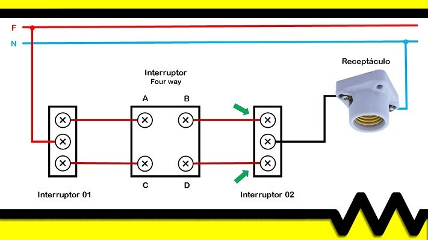

Interruptor intermediário
Dois paralelos nas extremidades. Adicione intermediários no meio e comande as mesmas lâmpadas de vários pontos.
A cor identifica a função.
TOQUE PARA EXPLORAR CADA CONDUTORSelecione um condutor para explorar sua função. Os dois retornos não se conectam entre si.
Como o intermediário muda o caminho.
Explore livremente ou percorra quatro etapas de uma explicação guiada.
Quatro bornes. Duas conexões simultâneas.
Direto: 1 → 3 e 2 → 4. Cruzado: 1 → 4 e 2 → 3. O cruzamento dos contatos não é uma ligação elétrica entre eles: os dois caminhos permanecem isolados.
Um cruzamento troca o retorno selecionado. Dois cruzamentos desfazem essa troca. Qualquer tecla inverte o estado das lâmpadas quando QF1 está ligado.
Acompanhe o caminho, etapa por etapa
Cores, ligação e imagem de referência
Identificação dos condutores · NBR 5410
Neutro em azul-claro e proteção em verde ou verde-amarelo. Vermelho para fase, violeta e laranja para retornos e cinza para retorno são escolhas deste exemplo, não cores obrigatórias para essas funções. Não são usadas as cores reservadas ao neutro e à proteção nos condutores ativos.
A fase alimenta o comum de S1. Dois retornos passam pelos intermediários I1, I2… até S2. O comum de S2 alimenta as lâmpadas. Neutro e PE seguem diretamente às luminárias.
A numeração 1/2 (entrada) e 3/4 (saída) é didática; confira as marcações e o esquema do fabricante do aparelho.
Diagrama didático de comando, sem representar o dimensionamento completo nem todos os dispositivos de proteção de uma instalação.
Referências: SIL · cores / NBR 5410 · WEG · esquemas com intermediários
